한다은 다달쌤 · 용인 이동초등학교 사서교사
메타버스 도서관에서 책을 만나고, AI로 책 속 고민을 앱으로 만들어 봅니다. 아이들이 즐겁게 읽고 깊게 생각하는 수업을 연구하고 나눕니다.
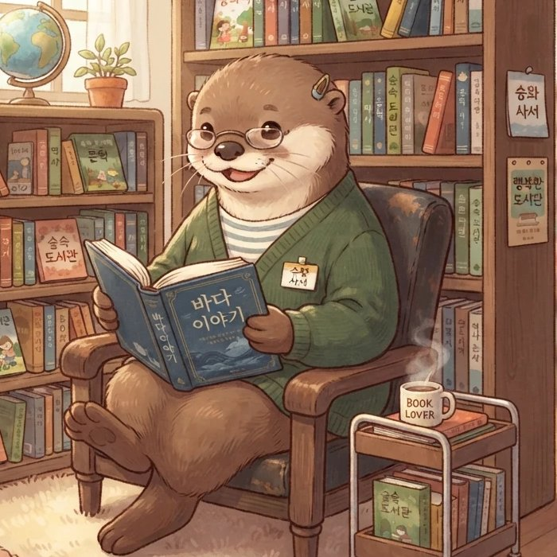
현장의 수업 사례를 선생님들과 나눕니다.
수업과 도서관 운영 경험을 글로 정리했습니다.
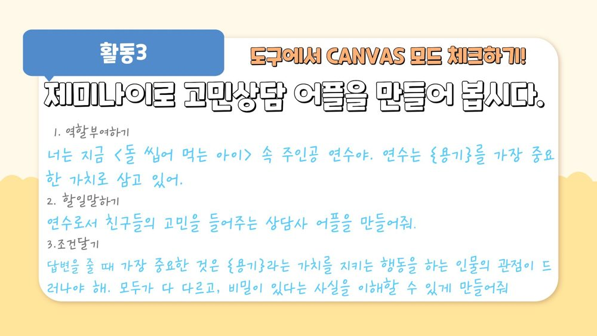
그림책을 읽고 AI로 주인공의 고민을 들어주는 상담 어플을 만든 수업 이야기
AI 기사 읽기 →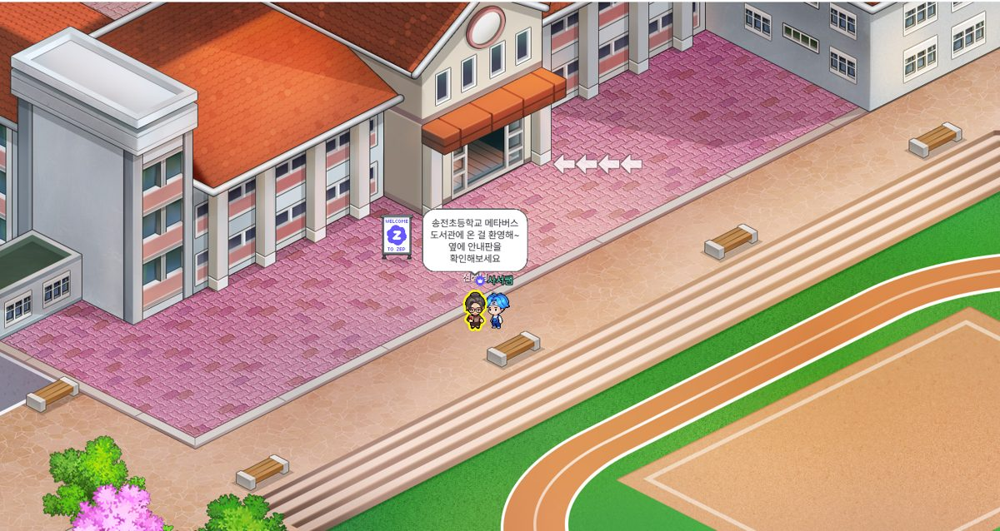
ZEP으로 메타버스 도서관을 만들고 온책읽기 방탈출·퀴즈로 참여를 넓힌 이야기
에듀테크 기사 읽기 →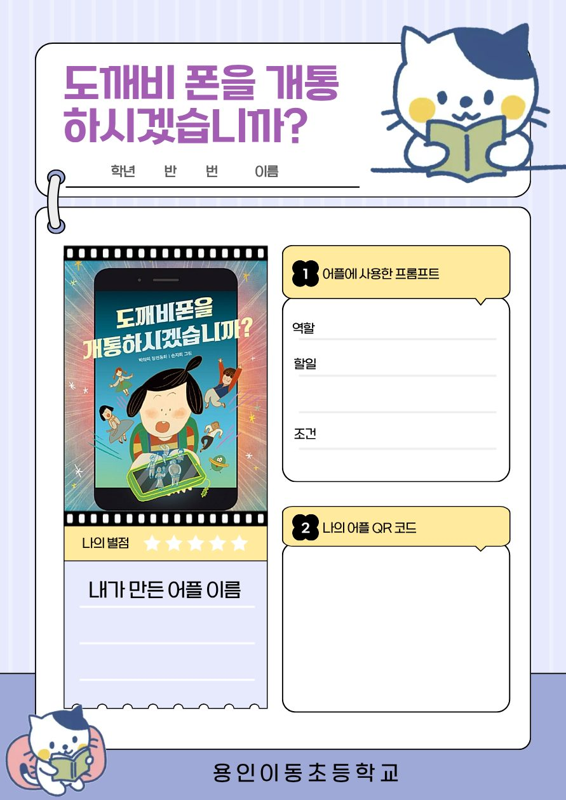
책 속 이야기를 앱 만들기와 활동으로 확장한 RAS 독서융합 수업 사례
AI 교사 내부 공유용 원고도서관에서 실제로 운영한 수업과 행사입니다.
학교도서관을 메타버스로 옮겨 언제 어디서나 이용 안내, 전자책, 독서 활동을 만나요.
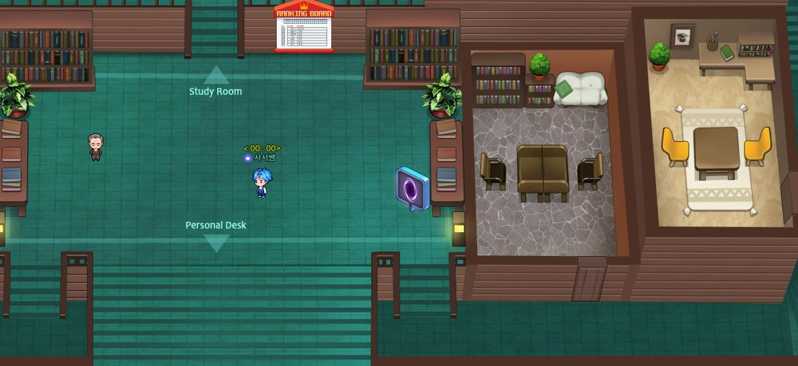
책 내용을 풀어야 탈출하는 학년별(1~6학년) 방탈출 게임
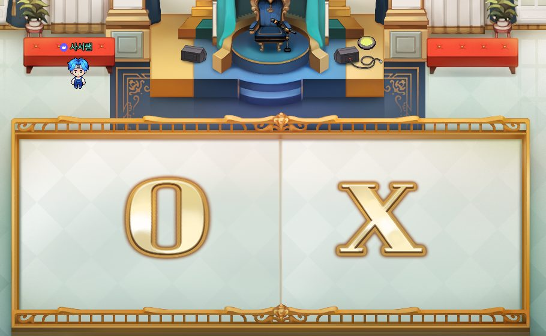
메타버스 공간에서 함께 푸는 책 내용 확인 퀴즈
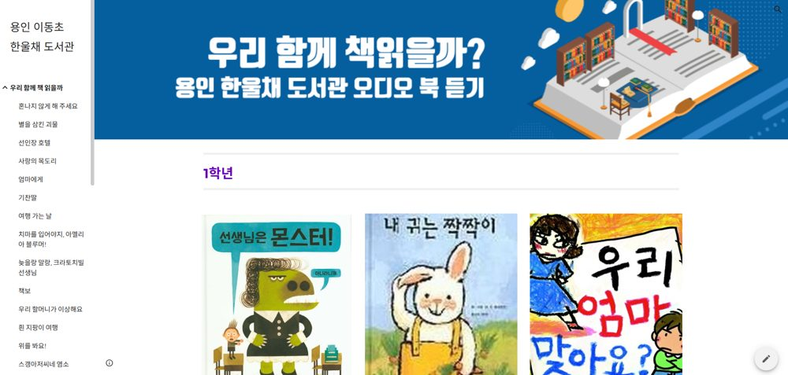
메타버스 도서관 안에서 학년별 오디오북 듣기
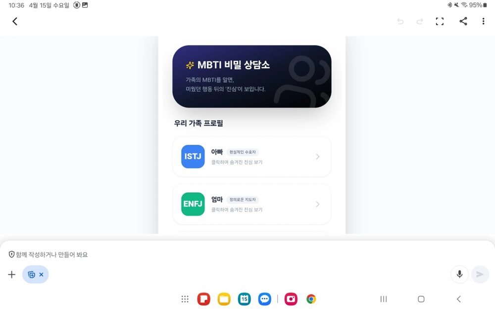
제미나이로 주인공의 비밀과 고민을 들어주는 나만의 앱 만들기
책 속 도깨비 폰을 상상해 앱으로 설계하는 RAS 융합 수업
환경 책을 읽고 AI로 온라인 행진 광장과 포스터 만들기
책의 주제를 담은 노래를 생성 AI로 만들어 보는 활동
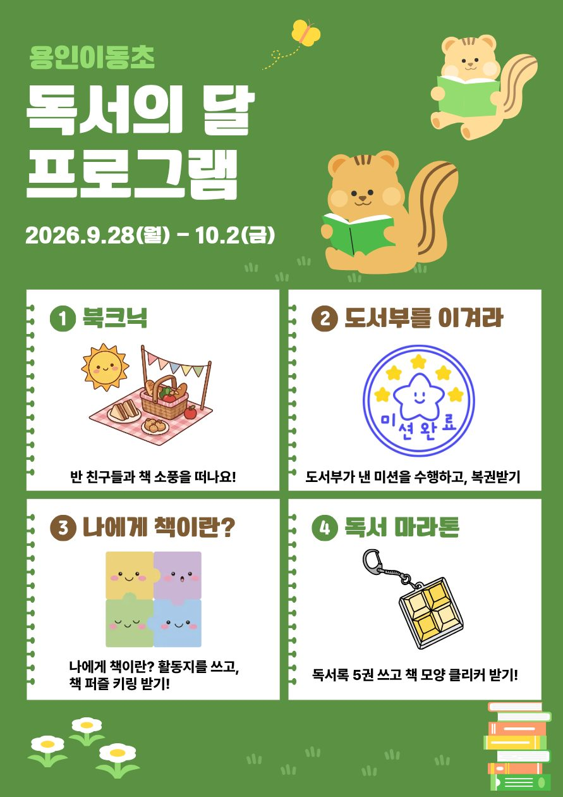
북크닉, 책 처방, 금쪽상담소 등 해마다 새롭게 여는 독서 축제
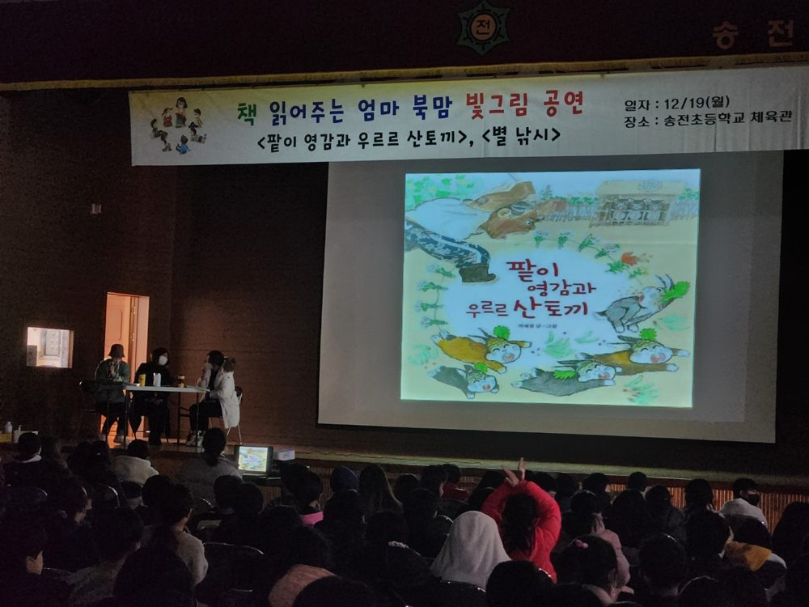
그림책을 큰 화면과 낭독으로 함께 감상하는 공연
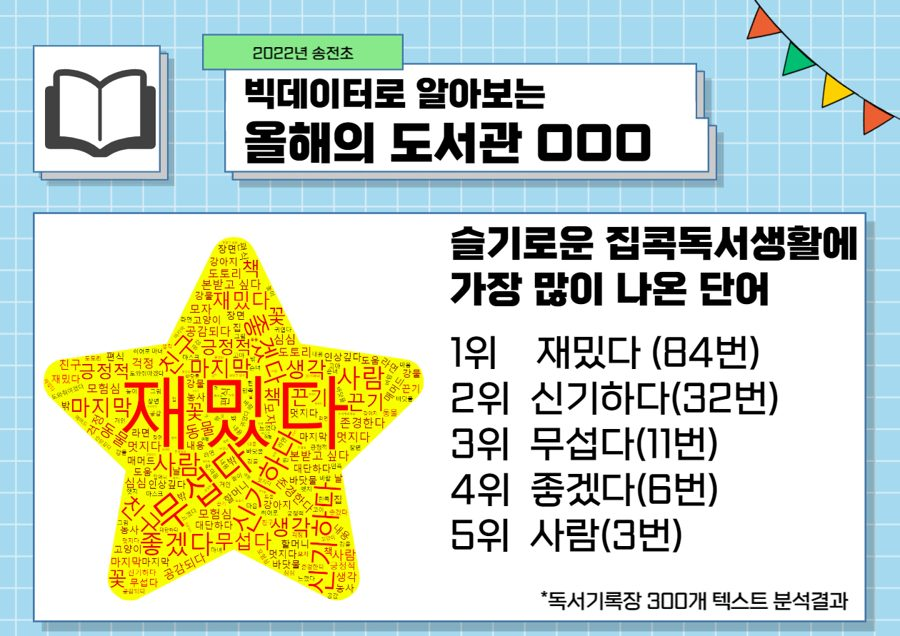
독서기록 300여 개를 분석해 올해의 단어와 책을 뽑아요.
스토리보드부터 그림까지, 학생이 직접 동화책을 만드는 프로젝트
도서부 학생들이 직접 여는 책과 음료가 있는 도서관 카페
글씨 쓰기, 책 추천, 독서 챌린지로 이어지는 학교 독서 캠페인